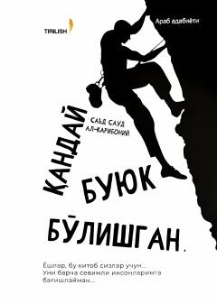

QBBuyuk insonlarning hayoti va maqsadga erishish sirlari haqida ilmiy-amaliy qo'llanma.
Ushbu kitobda maqsad va unga erishishda matonat, ixtiyor, qat'iyat hamda optimizm muhimligi ilmiy asoslar bilan tushuntiriladi. Muallif buyuk insonlarning hayoti va mashaqqatlarni qanday yengib o'tgani haqida hayotiy misollar orqali hikoya qiladi. Kitob o'quvchilarga o'z oldiga aniq maqsad qo'yish va unga erishish yo'llarini o'rgatadi.